Physically Accurate Light,
In Real Time
This is a real-time, browser-based renderer of UC Berkeley's Campanile (Sather Tower). Instead of art-directed values, the lighting comes from physical and astronomical models: the sun's position is computed from Berkeley's coordinates and the date, the sky uses the Preetham analytical model, and a live shadow camera tracks the sun every frame. The tower itself was hand-modeled in Blender, and its stone uses a procedural shader that interpolates between dry and rain-slicked states.
The full scene runs in the browser on Three.js + WebGL 2.0 and holds 60 fps on a consumer laptop. A small UI panel exposes a time-of-day slider, a day-of-year slider, and three weather presets (clear, overcast, rain), so the same model reads correctly at noon, at dusk, on a clear night, and during a thunderstorm with stochastic lightning.
Systems & Methods
The renderer is built as a set of loosely coupled subsystems — one per physical phenomenon (sun, sky, shadows, weather, materials). All of them read the same time-of-day and date each frame, so everything stays visually consistent.
The sun's azimuth and altitude are computed each frame from standard solar-geometry equations, anchored to Berkeley's coordinates (37.87°N, 122.26°W) with a longitude correction (Berkeley sits ~9 minutes east of the PST/PDT meridian) and a DST offset. The resulting unit vector drives the directional light, the shadow camera frustum, and the sky shader.
We use a single-sine declination instead of the full NOAA SPA — accurate to ~1° at solstice noon and ~3° at equinox sunrise, which is plenty for a seasonal slider.
The sky dome is a custom GPU shader that implements the Preetham et al. (1999) analytical model. Per-pixel radiance is evaluated from the angle to the zenith and the angle to the sun, modulated by turbidity:
A procedural cloud layer sits on top of the analytical sky, with the cloud-cover scalar amplitude-modulated each frame by two incommensurate sines: $c(t) = c_0 + 0.04\,\sin(0.13\,t) + 0.03\,\sin(0.07\,t)$. The motion is below the threshold of conscious perception, but it removes the dead, static feel a fixed cloud value would otherwise have.
A 2048² PCF soft shadow map is produced by a directional light whose position and frustum follow the sun. Depth bias and normal bias are tuned together to suppress Peter Panning at low sun angles. Cloud cover continuously dampens shadow intensity — up to 25% under full overcast — since diffuse cloud light shouldn't cast a hard shadow.
The Campanile was hand-modeled in Blender, with each architectural element (pilasters, belfry shaft, windows, pyramid roof) kept as a named sub-component, then exported as a single glTF binary. After load, the mesh is scaled to ~94 m to match the real tower. Surface detail — stone grain, masonry courses, weathering streaks — is drawn procedurally in the fragment shader rather than from image textures, which made the look fast to iterate on (see Card 05 for the dry/wet system).
Switching between the three presets (clear, overcast, rain) smoothly interpolates five scalars — fog color, fog density, cloud cover, turbidity, and rain strength — with a 1.5-second time constant, so transitions don't snap. Fog has two seasonal modulations: density gets up to a 1.5× boost near dawn and dusk to read as morning mist, and color is dimmed with the sun's height so nighttime fog reads dark instead of daytime grey.
Wet stone is implemented by a single uniform that linearly interpolates the PBR material's roughness input from dry to rain-slicked using the wetness scalar w ∈ [0, 1]:
Rain is a particle system of short streak billboards, tinted each frame by the live fog color so it integrates with the scene's lighting instead of reading as a flat overlay. Lightning fires stochastically during rainstorms — strike rate scales with rain strength — and on each strike we briefly boost sky exposure, hemisphere fill, and rain-streak brightness for a single-frame flash. Moonlight is a separate cool, dim directional light placed opposite the sun; it fades in at night and out under cloud cover.
Implementation Stack
The renderer is built on Three.js r160 over WebGL 2.0, bundled with Vite, and hosted on GitHub Pages. The sky uses custom GLSL shaders loaded as raw strings; the stone uses Three.js's standard PBR material patched via onBeforeCompile, which lets us inject procedural weathering and the wet-state interpolation without forking the whole shader. The UI is Tweakpane: time-of-day, day-of-year, weather, and the shadow / lightning toggles are all live-bound to the render loop.
Performance
The scene holds 60 fps at 1440p on an Apple M2 MacBook Pro at roughly 35% GPU utilization. The biggest per-frame cost is the 2048² shadow map, which is regenerated every frame so it tracks the sun. A PMREM-prefiltered environment map provides approximate reflections on wet stone; we rebuild it at 2 Hz instead of every frame, since the sky changes slowly with time-of-day and a half-second cadence is invisible.
Challenges
Photogrammetry pivot. Our original proposal was to reconstruct the tower from photos using Meshroom (AliceVision) Structure-from-Motion. Two issues forced us to abandon that approach. First, the Campanile's height and four-fold rotational symmetry are bad for SfM: the upper belfry and pyramid roof are nearly impossible to photograph from a useful angle without aerial access, and the four near-identical façades confuse feature matching. Second, the granite surface is uniform and low-contrast, which gives the matcher very little to lock onto.
The Meshroom output had irregular polygon density on the shaft, holes around the belfry openings, and almost no usable detail on the roof. Cleaning it to a usable state would have taken longer than starting over, so we pivoted to hand-modeling the tower in Blender as a set of named sub-components (pilasters, belfry shaft, windows, pyramid roof). The result has cleaner topology, predictable scale, and lets us address sub-meshes individually when assigning materials.
Peter Panning at low sun angles. At sunrise and sunset, the directional light approached grazing angles and produced a visible gap between the tower and its own shadow. Cranking the depth bias up just traded the gap for shadow acne. The fix was a tuned combination of depth bias, normal bias, and a 25% shadow-intensity cut under overcast — where physically diffuse cloud light shouldn't be casting a hard shadow anyway. There's no closed-form solution for these parameters, so finding a stable set was iteration across mesh scale, light angle, and shadow-map resolution.
Preetham banding at twilight. The Preetham model produces visible banding near the sun disk when the sun gets very low (below ~2°). It's a known limitation of the 1999 paper — its chromaticity polynomial just isn't tuned for the long horizon-grazing path the sun light takes at twilight. The clean fix is the Hosek-Wilkie (2012) successor, which adds a correction term for exactly this case. We accepted the artifact rather than re-implement a second sky model, and noted the upgrade as future work.
Rain reading as an overlay. Our first rain pass rendered streak billboards with a fixed white tint, and the result didn't look like part of the scene — it looked pasted on top of it. We fixed this by tinting each streak with the scene's live fog color every frame, so rain inherits the same atmospheric attenuation as everything else. A related issue — nighttime fog reading as daytime grey — was fixed by coupling fog brightness to the sun's vertical position, so the fog naturally darkens as the sun drops below the horizon.
Deviations from References
Our implementation differs from the cited references in a few places, all of them deliberate trade-offs:
- Solar position. Single-sine declination instead of the full NOAA SPA, ignoring the equation of time. Accurate enough for a seasonal slider, but not for second-precision astronomy.
- Sky shading. Preetham (1999), not the Hosek-Wilkie (2012) successor. We accept the twilight banding as a limitation rather than implement a second sky model.
- Stone material. Patched into Three.js's standard PBR shader via
onBeforeCompilerather than written as a from-scratch BRDF or backed by photographed roughness/normal texture maps. Faster to iterate on, sufficient for a stylized look. - Cloud "breathing." A two-sine CPU modulation (angular frequencies 0.07 and 0.13 rad/s, amplitudes ±0.03 and ±0.04) — not from any cited reference, but necessary to break the static feel of a fixed cloud-cover value.
- Geometry. Hand-modeled in Blender rather than reconstructed via Meshroom photogrammetry as originally proposed (see Photogrammetry pivot above).
Rendered Outputs
All images below were captured directly from the live demo by setting time, date, and weather in the UI. No post-processing was applied. Each combination is one the physical models are designed to handle: a specific sun position, seasonal date, and atmospheric condition.
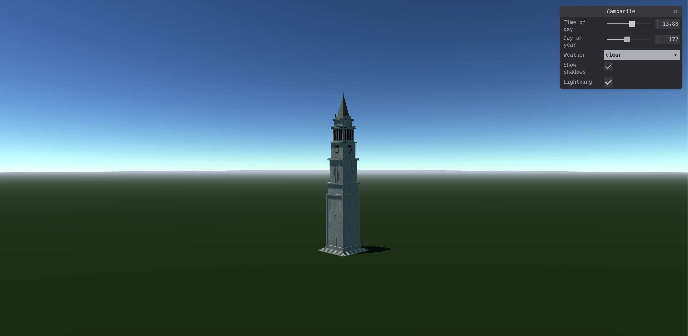
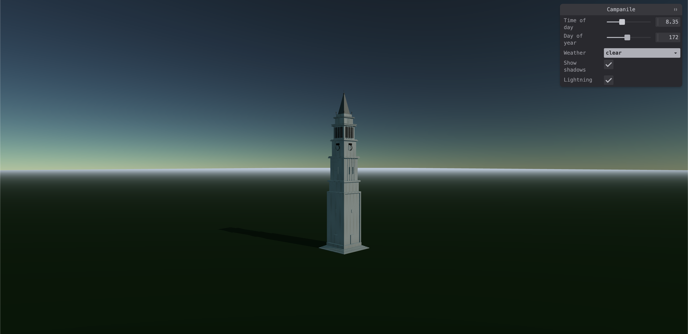
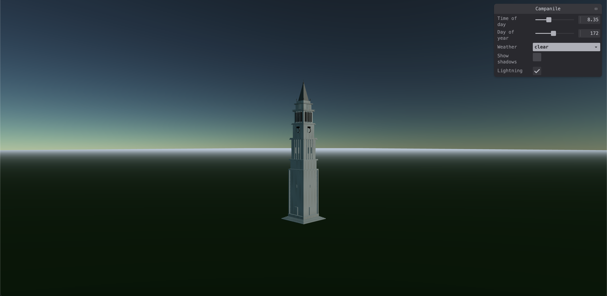
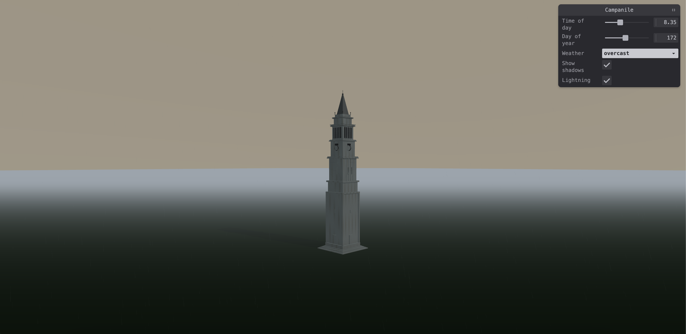
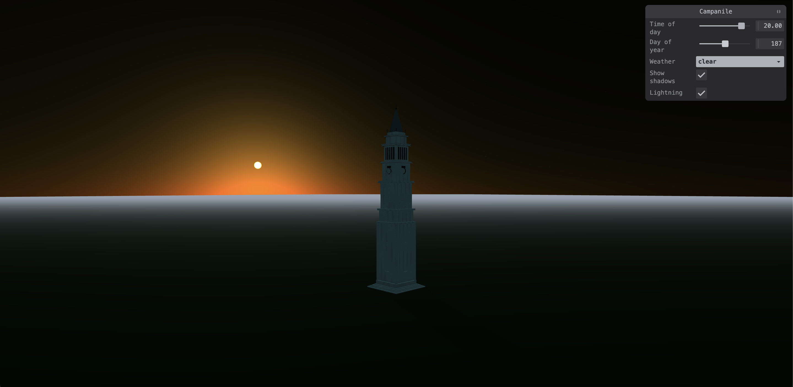
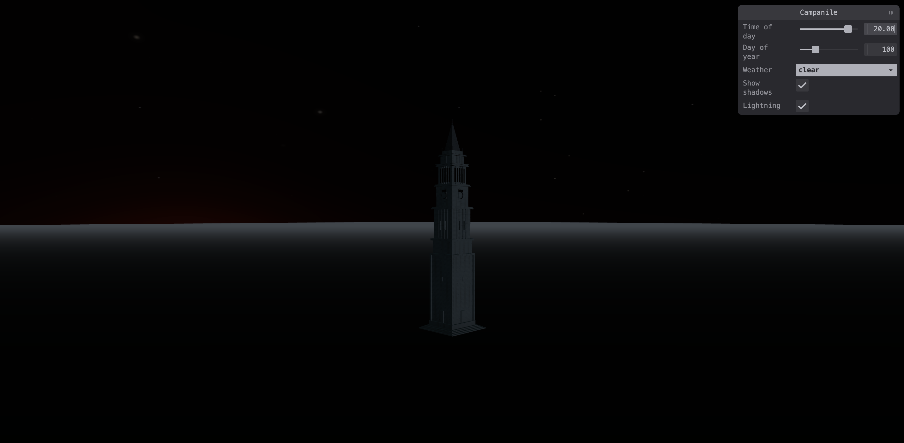
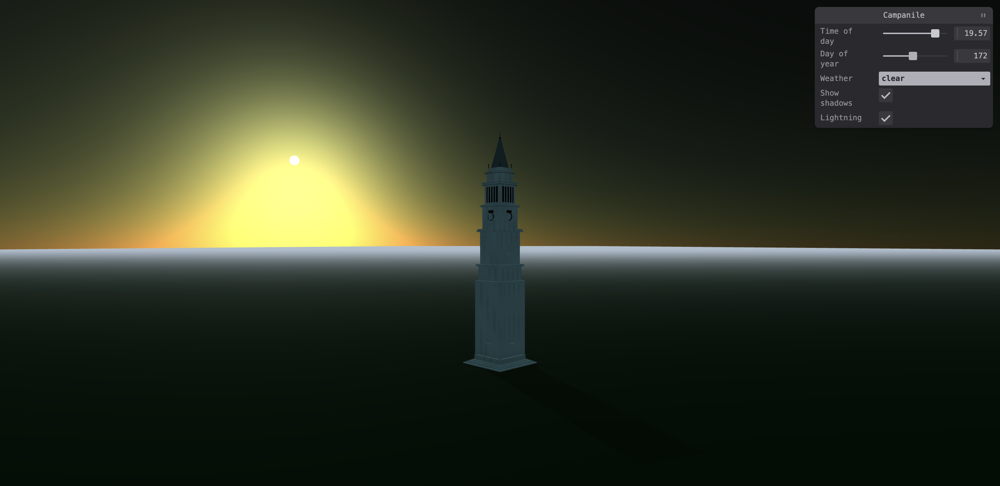
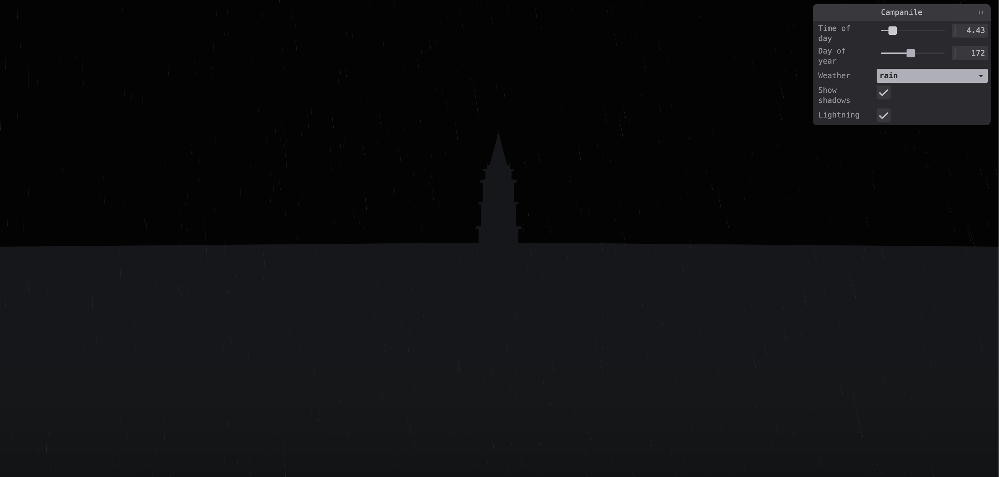
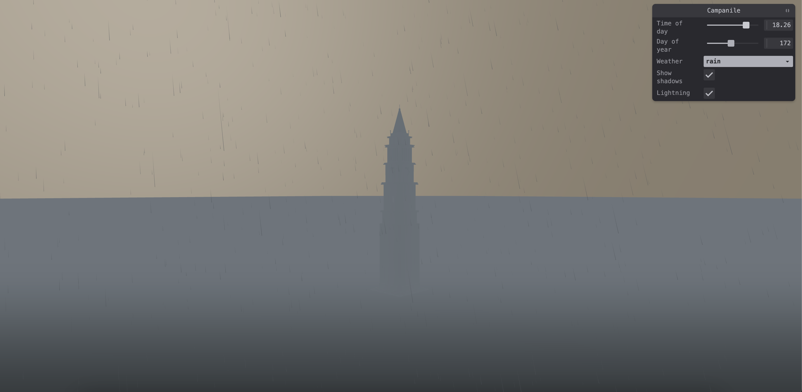
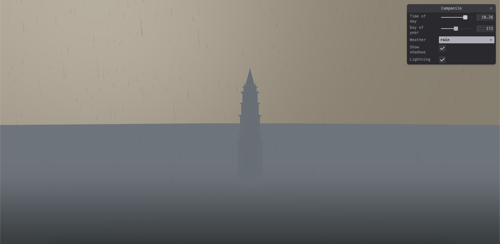
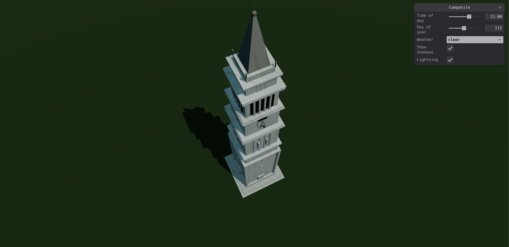
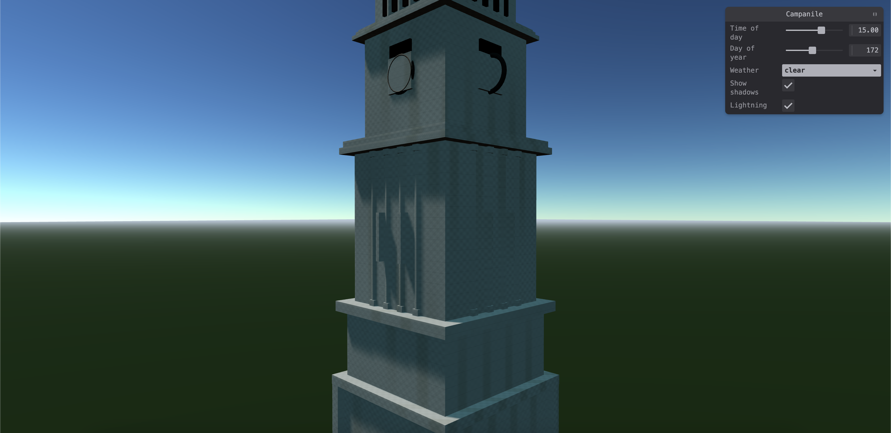
onBeforeCompile. The cornice edges pick up the hemisphere sky color in their specular falloff.What We Discovered
- 1 Physical models break down at extreme conditions. Preetham works cleanly across most of its domain, but produces visible banding near the sun disk at very low elevations (below ~2°) — a known weakness of the 1999 paper that Hosek-Wilkie (2012) was designed to fix. The lesson: validate at boundary conditions, not just at the comfortable midday case.
- 2 Shadow bias has no closed-form solution. Depth bias, normal bias, and shadow-map resolution interact in ways that depend on mesh scale and light angle, so finding a stable set is just iteration. We spent real time at low sun angles balancing Peter Panning against shadow acne, eventually settling on the bias combination plus a 25% intensity cut under overcast. Takeaway: budget time for empirical tuning of any numerical parameter in real-time rendering.
-
3
Procedural beats baked when you're iterating. Instead of authoring and re-baking texture maps for the stone, we injected sin-noise grain, masonry courses, and the wet-state interpolation into Three.js's PBR shader via
onBeforeCompile. Tuning the look meant editing a constant and reloading — no bake step, no UV unwrap, no re-export. For a stylized stone surface where the look mattered more than photo-fidelity, this was dramatically faster than a texture-map pipeline. - 4 Subsystems have to talk to each other. Each subsystem (sky, fog, rain, shadows) was physically reasonable in isolation, but rain still felt pasted onto the scene until we tinted the streaks with the live fog color, and nighttime fog read as daytime grey until its brightness was tied to the sun's elevation. Lesson: physical correctness in each system doesn't automatically compose into a believable whole — the couplings between them matter just as much as their individual accuracy.
- 5 Browser deployment is great for distribution, painful for headroom. Shipping in the browser meant anyone could open the live demo with a URL — no install, no setup. But WebGL 2.0 has no compute shaders, and the browser's memory pressure put a ceiling on our particle counts and shadow-map resolution. A native OpenGL or Vulkan target would have allowed volumetric clouds and bigger shadow maps; both are on the future-work list.
References
- [1] A. J. Preetham, P. Shirley, and B. Smits, "A Practical Analytic Model for Daylight," SIGGRAPH 1999. The sky model implemented in our GPU sky shader, parameterized by turbidity and sun elevation.
- [2] L. Hosek and A. Wilkie, "An Analytic Model for Full Spectral Sky-Dome Radiance," ACM TOG (SIGGRAPH 2012). Considered as a twilight-accuracy upgrade to Preetham; deferred to future work.
- [3] NOAA Solar Position Calculator. Used as a reference for solar azimuth/altitude at Berkeley coordinates when sanity-checking our implementation at solstice and equinox. gml.noaa.gov/grad/solcalc/
- [4] Three.js r160 documentation and source. WebGL 2.0 renderer, PBR materials, shadow mapping, and orbit controls. threejs.org/docs
- [5] Tweakpane UI library. Live-bound parameter panel for time, date, weather, shadow, and lightning controls. tweakpane.github.io/docs
- [6] Project milestone report and presentation slides. Google Drive · Milestone Video
Who Built What
- Implemented the Preetham sky shader in GLSL
- Sanity-checked the Preetham implementation against the paper's analytic equations during development
- Designed and tuned all three weather presets
- Implemented exponential fog with time-of-day density variation
- Authored the milestone report writeup
- Modeled the Campanile geometry in Blender with named architectural sub-components
- Authored the procedural stone weathering shader (grain, masonry courses, runoff streaks) via
onBeforeCompile - Implemented dry/wet PBR material switching (roughness and diffuse interpolation between dry and wet states)
- Configured and tuned PCF shadow mapping parameters
- Derived and implemented solar position equations (declination, hour angle, azimuth, altitude)
- Validated azimuth/altitude within ~1° at solstice noon and ~3° at equinox sunrise for Berkeley coordinates
- Built the dynamic directional light and shadow camera frustum system
- Implemented moonlight model (opposite solar vector, night/cloud modulation)
- Created the interactive Tweakpane UI and slider bindings
- Designed and implemented the rain particle streak system
- Built atmospheric tinting of rain streaks from live fog color
- Implemented the procedural lightning system with frame-level exposure boosts
- Performance profiling and GPU utilization optimization
- Set up the Vite build pipeline and GitHub Pages deployment
- Authored the final report writeup